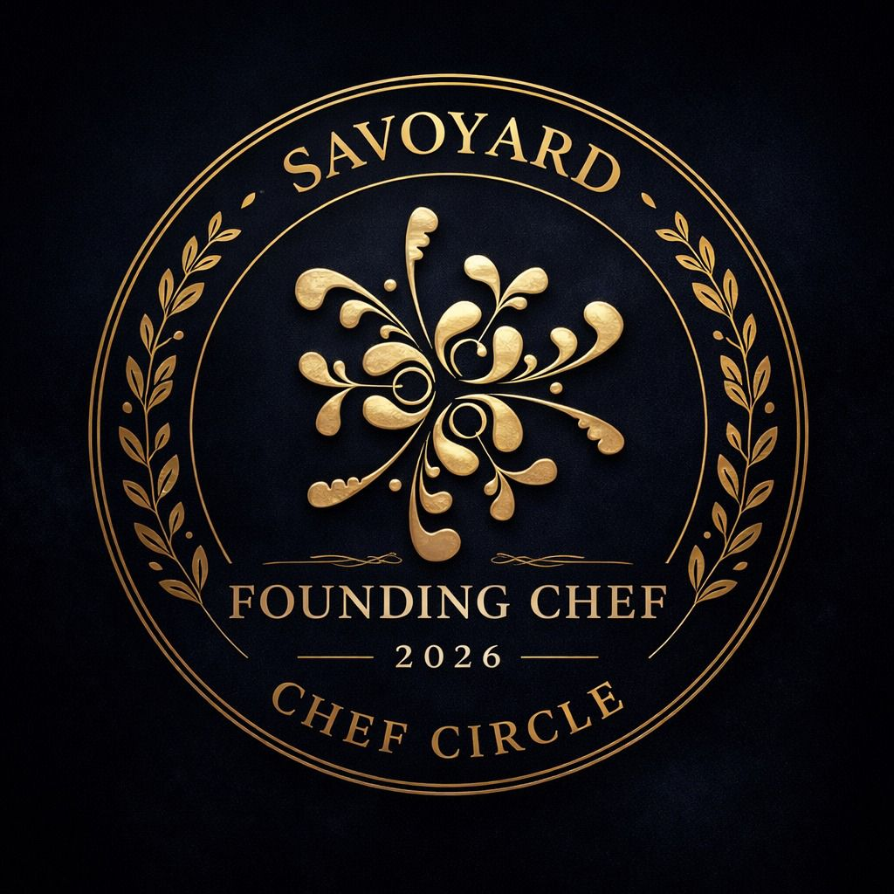

Construa conosco
A Savoyard acredita que a excelência nasce da colaboração. Convidamos Chefs, Restaurantes, Hotéis e Produtores a construírem conosco o futuro dos queijos e manteigas artesanais no Brasil — por meio de produtos exclusivos, curadorias, assessorias, menus e inovações gastronômicas.

Áreas de parceria
Desenvolvimento de manteigas e queijos exclusivos sob medida para o seu menu. Curadorias sensoriais, co-criação de produtos e consultoria de ingredientes premium para elevar sua assinatura gastronômica.
Implantação do Le Rituel du Beurre como diferencial de hospitalidade. Assessoria para carta de manteigas, tábuas de queijos e experiências que fidelizam convidados e elevam a percepção de valor.
Parcerias com produtores de leite, queijos artesanais e ingredientes especiais. Valorizamos a cadeia produtiva e buscamos relações de longo prazo baseadas em qualidade, rastreabilidade e respeito pela matéria-prima.
Assessoria para desenvolvimento de menus com foco em laticínios artesanais. Criação de experiências gastronômicas exclusivas, eventos temáticos e programas de curadoria sensorial para estabelecimentos que buscam diferenciação.
Faça parte
Se você é Chef, Restaurante, Hotel ou Produtor e compartilha nossa paixão pela excelência em queijos e manteigas, entre em contato. Queremos ouvir sua história e criar algo extraordinário juntos.
Propor parceria